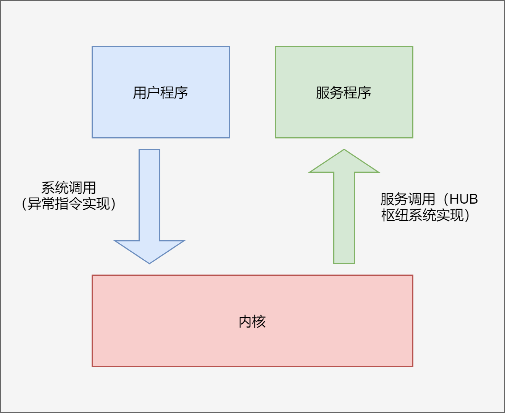
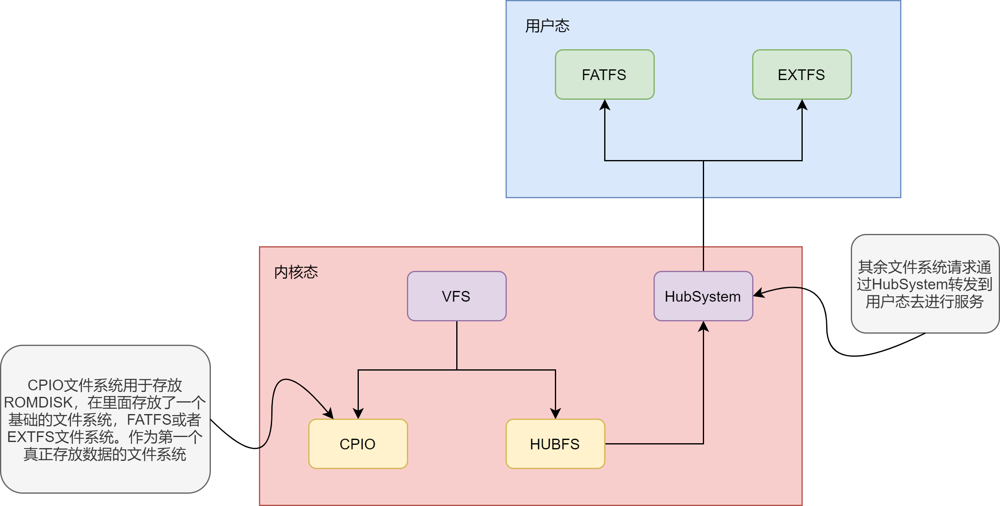
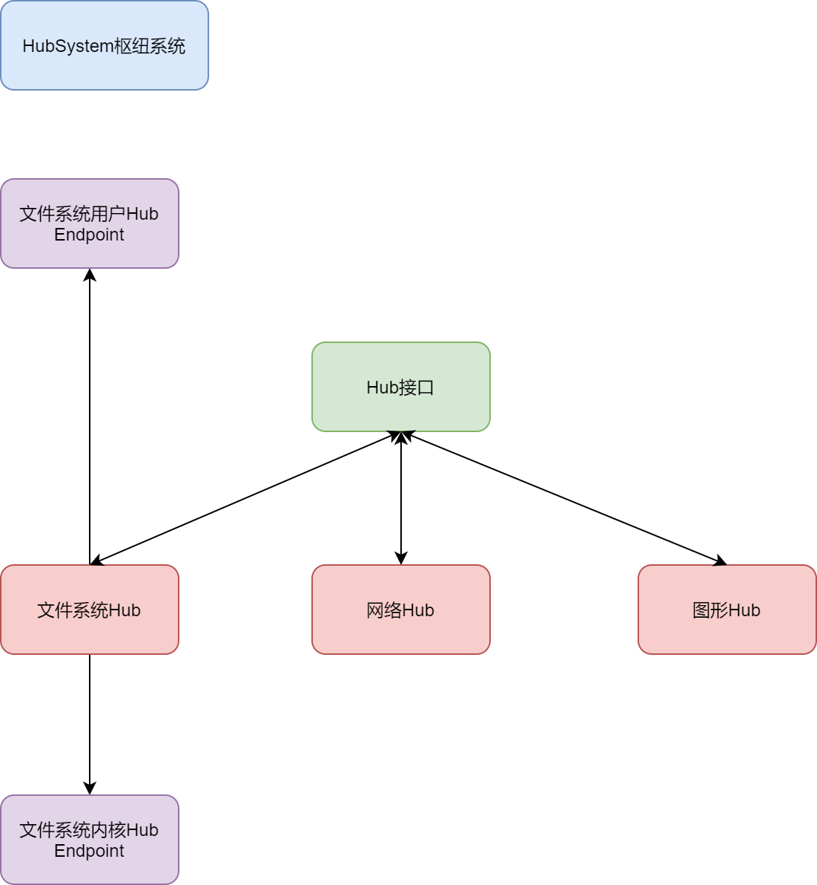

用户态服务
描述
用户态服务作为内核功能的延伸，可以以插件和模块的方式参与到操作系统的工作中。
和微内核不同的是， NXOS 中的服务是和内核进行沟通的，而不是直接和用户程序进行沟通的。
因此，服务的功能是受限于内核的功能的，服务是基于内核暴露的服务接口去做某个具体功能的实现，服务仅仅是内核功能的一个拓展。
借助 HUB 枢纽系统机制，可以实现数据的控制与传输，内核就需要使用 HUB 机制来实现对用户态服务的调用。
用户态服务和内核系统调用流程是类似的。系统调用的时候，就是用户往内核调用。而内核调用用户态服务的时候，就是服务调用。

HUB的应用
可以通过 HUB 机制去实现内核态的 VFS 接口+用户态的文件系统服务程序。
这样做的目的是在于，统一文件系统接口，方便资源的分配与回收管理，减少内核代码量，
利用进程内存隔离，避免功能崩溃导致操作系统崩溃。

除了 VFS 的实现，还有其他机制，也可以通过 HUB 机制实现。
